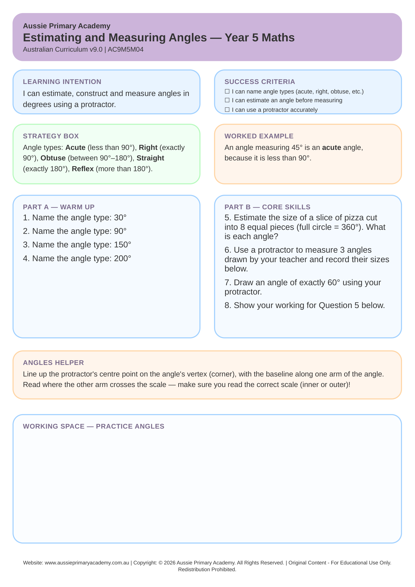

Year 5 · Maths · Measurement · Free Printable
Estimating and Measuring Angles
Estimate, measure and compare angles using degrees and appropriate tools.
Worksheet Preview

Why families download this one
✅ Instant download, no sign-up. Ready to print in under 2 minutes — perfect for homework, a NAPLAN-style practice session, or tomorrow's lesson. No email required, ever.
Learning Intention
Students will estimate and measure angles in degrees using a protractor, and relate their measurements to angle names.
Australian Curriculum
AC9M5M04
Estimate, construct and measure angles in degrees, using appropriate tools including a protractor, and relate these measures to angle names.
Teacher Notes
Have a protractor on hand — estimating first and then measuring is what builds a real feel for degrees, rather than just reading a tool.
Skills Practised
- Measurement
- Mathematical/critical reasoning
- Real-life application
- Self-checking against success criteria
Why This Worksheet Works
- Estimating before measuring builds genuine number sense for degrees, not just tool skills.
- Practice covers acute, obtuse, right and reflex angles, so the vocabulary sticks alongside the skill.
- A success-criteria checklist lets students track their own progress against the learning intention.
- Written to AC9M5M04, so it drops straight into a Year 5 measurement lesson.
Estimating and Measuring Angles — Frequently Asked Questions
Common questions from parents, tutors and teachers about this worksheet.
Is "Estimating and Measuring Angles" aligned with the Year 5 Australian Curriculum?
Yes. This worksheet supports AC9M5M04 — estimate, construct and measure angles in degrees, using appropriate tools including a protractor, and relate these measures to angle names.
Do I need to sign up or enter my email to download?
No. The worksheet downloads instantly as a free PDF — no sign-up and no email required.
Is this worksheet self-checking?
Yes. It includes success criteria (or a worked example) so students can check their own understanding without a separate answer key.
How long does this worksheet take to complete?
Most Year 5 students complete it in 20–30 minutes, depending on pace and prior knowledge.